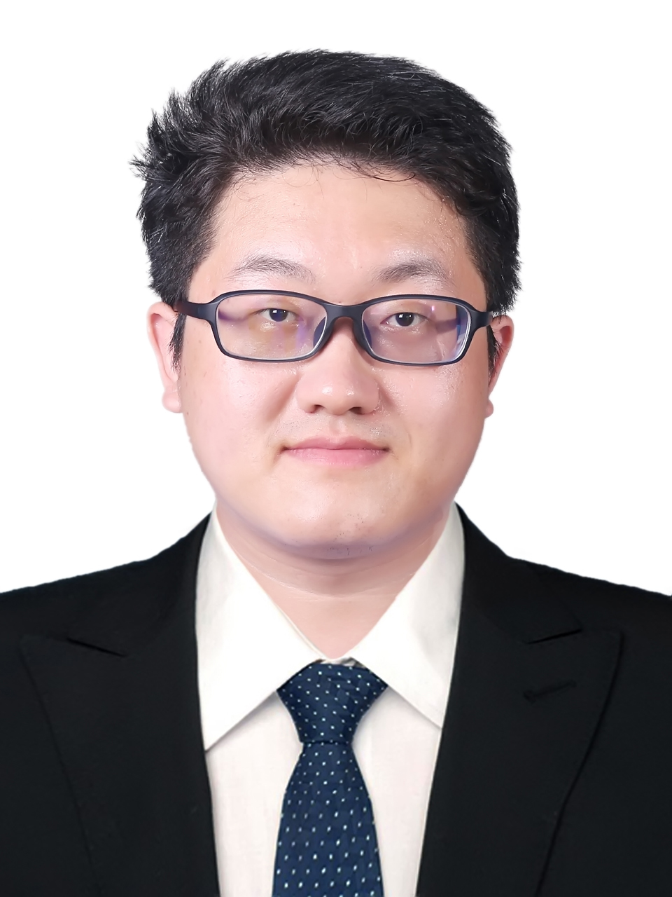

崔社强，博士，教授，博士生导师，国家海外引进高层次青年人才（中组部海外人才计划），山东大学杰出中青年学者。 主要从事非饱和土力学和多场耦合条件下地基结构变形机理与防控技术研究。 在非饱和土-热-水-力多场耦合机制及本构模型、地基热储结构（能源桩、能源隧道等）热力耦合性态等方面取得了创新成果。 共发表SCI/EI期刊论文30余篇，其中以第一作者/通讯作者在《Geotechnique》、《Journal of Geotechnical and Geoenvironmental Engineering (ASCE)》、《Canadian Geotechnical Journal》、《Computers and Geotechnics》等权威期刊上发表十余篇。 担任《Journal of Geotechnical and Geoenvironmental Engineering (ASCE)》、《Canadian Geotechnical Journal》及《Journal of Rock Mechanics and Geotechnical Engineering》等多个中外土工领域国际权威SCI期刊的通讯审稿专家。
荣获香港工程师学会（HKIE）颁发的2023-2024年度香港工程师学会第九届优秀博士论文奖（HKIE Ringo Yu Prize for Best PhD Thesis in Geotechnical Studies），该奖项是香港在土工领域年度最佳博士论文。 主持或参与国家自然科学基金、国家重点研发计划以及香港研究局重点专项等项目。